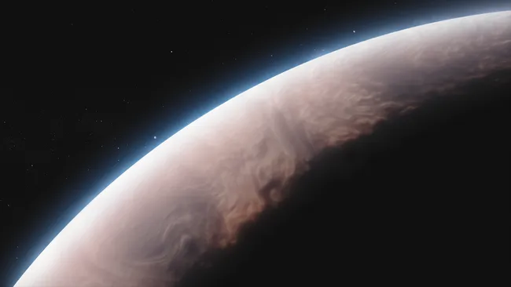

Posted 7h ago
An artist’s impression of the silicate-rich atmosphere of WASP-17b.
Thousand-mile-per-hour winds are blowing a hail of tiny quartz crystals through the
silicate-enhanced,
scorching hot atmosphere of a distant gas giant planet called
WASP-17b, the James Webb Space
Telescope (JWST) has found.
WASP-17b is an incredible world. Orbiting every 3.7 days at a distance of just 7.8 million
kilometers (4.9 million miles) from its star, which sits 1,300 light years away from Earth,
WASP-17b is so close to its stellar host that its dayside temperature rises to a staggering
1,500 degrees Celsius (approximately 2,700 degrees Fahrenheit). Because the
atmosphere is so
hot on this exoplanet, the world has actually expanded to about
285,000 kilometers
(176,892 miles) across, which is just shy of twice the diameter of
Jupiter.
And that's despite WASP-17b having only about half of Jupiter’s overall mass.
WASP-17b is one of the "puffiest" planets known — and its bloated atmosphere makes
it
a great target for the James Webb Space Telescope.
Grant and fellow astronomers watched WASP-17b transit its star using the JWST’s
Mid-Infrared
Instrument (MIRI). As the exoplanet moved in front of its star from the JWST's
point of view,
MIRI detected starlight that was blocked by the puffy planet itself but partially
absorbed by
the world's atmosphere. Such measurements result in a so-called transmission
spectrum, whereby
certain wavelengths are blocked out by particular atmospheric molecules.
Like Jupiter, WASP-17b appeared to be mostly made from hydrogen and helium. In addition, MIRI
detected carbon dioxide, water vapor and, at a wavelength of 8.6 microns, the absorption signature
of pure quartz crystals. Combined with previous observations with the Hubble Space Telescope,
these crystals are judged to be shaped like the same pointy, hexagonal prisms as quartz is on
Earth,
but just a meager 10 nanometers in size.
The transmission spectrum of WASP-17b, showing how the quartz is blocking light at a
wavelength of 8.6 microns.